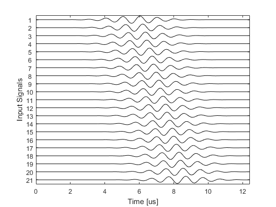
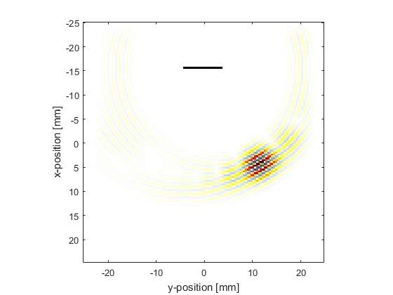
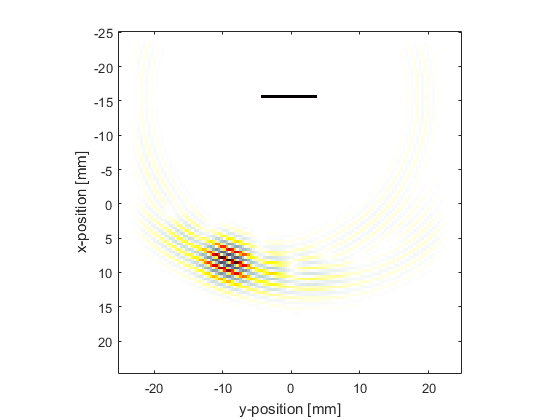

Steering A Linear Array Example
This example demonstrates how to use k-Wave to steer a tone burst from a linear array transducer in 2D. It builds on the Simulating Transducer Field Patterns Example.
Contents
Defining the linear array and input signal
The source mask is defined by creating a binary mask with the desired source points set to 1.
% define source mask for a linear transducer with an odd number of elements num_elements = 21; % [grid points] x_offset = 25; % [grid points] source.p_mask = zeros(Nx, Ny); start_index = Ny/2 - round(num_elements/2) + 1; source.p_mask(x_offset, start_index:start_index + num_elements - 1) = 1;
The input signal to each element is then created using
the function toneBurst with a geometrically steered temporal offset that varies across the source.
% define the properties of the tone burst used to drive the transducer sampling_freq = 1/kgrid.dt; % [Hz] steering_angle = 30; % [deg] element_spacing = dx; % [m] tone_burst_freq = 1e6; % [Hz] tone_burst_cycles = 8; % create an element index relative to the centre element of the transducer element_index = -(num_elements - 1)/2:(num_elements - 1)/2; % use geometric beam forming to calculate the tone burst offsets for each % transducer element based on the element index tone_burst_offset = 40 + element_spacing * element_index * ... sin(steering_angle * pi/180) / (medium.sound_speed * kgrid.dt); % create the tone burst signals source.p = toneBurst(sampling_freq, tone_burst_freq, tone_burst_cycles, ... 'SignalOffset', tone_burst_offset);
A plot of the input signals for each transducer element is shown below.
Running the simulation
Visualisations of the pressure field at two different times for steering angles of +30 and -20 degrees are shown below.
 